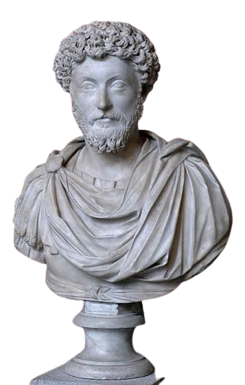
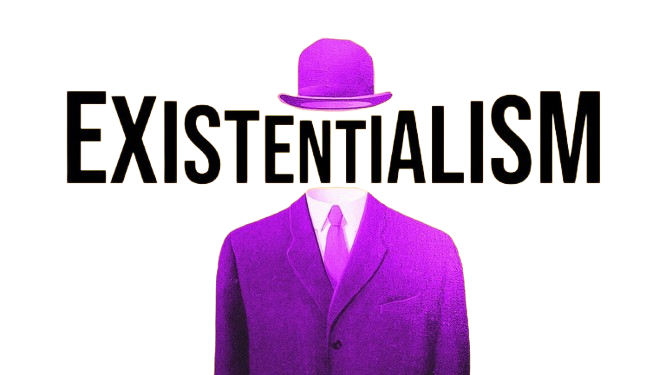
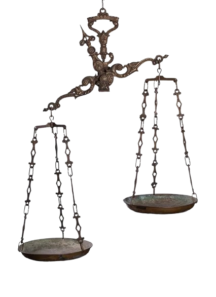
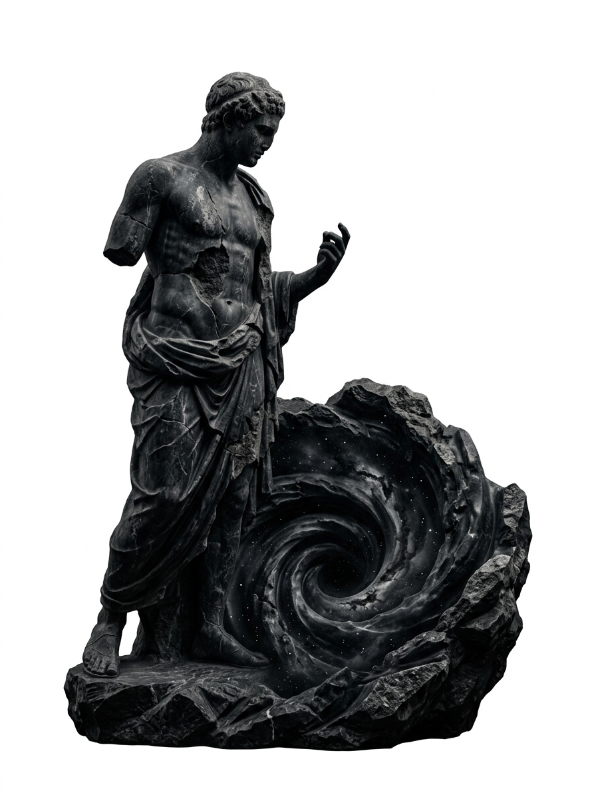
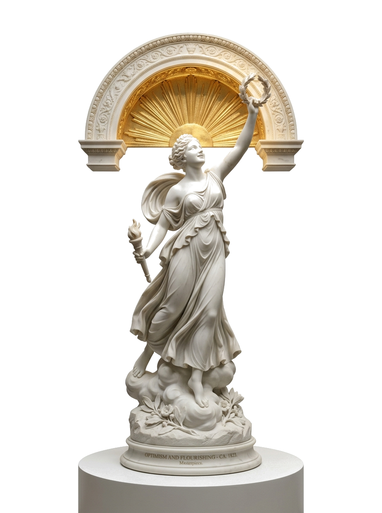

The Dichotomy of Control
Divide all reality into what is within your volition (judgments, desires, moral character) and what lies outside it. Suffer only for what you author.
A dialectic cartography — four distinct ways the human mind confronts fate, freedom, absurdity, and certainty.
"You have power over your mind — not outside events. Realize this, and you will find strength."
"The happiness of your life depends upon the quality of your thoughts."

MARCUS AURELIUS · EST. 161 CEDivide all reality into what is within your volition (judgments, desires, moral character) and what lies outside it. Suffer only for what you author.
Do not merely tolerate adversity; actively desire it as the raw material for virtue. What stands in the way of the action becomes the action.
Constant mindfulness of mortality strips away trivial vanity, petty grievances, and paralysis — leaving only present integrity.
"Existence precedes essence — man first exists, encounters himself, surges into the world, and defines himself afterwards."
An artisan conceives a paper-knife's purpose before forging it — its essence precedes its existence. But humanity has no divine craftsman or pre-set blueprint. We arrive into being unscripted, and only through radical action do we author our essence.
"Man is condemned to be free; because once thrown into the world, he is responsible for everything he does."

PARIS 1943 · THE UNWRITTEN SELFThere are no cosmic excuses, determinism, or biological absolution. You alone bear the weight of what you become. In choosing for yourself, you choose a vision of humanity.
The quiet cowardice of pretending you have no choice. Like Sartre's café waiter playing an exaggerated role, we hide behind societal scripts to flee the terror of our own freedom.
Freedom is not selfish whim. As de Beauvoir proved, authentic liberty can only sustain itself by willing the freedom of all others. To oppress another is to betray your own freedom.
"The absurd is born of this confrontation between the human call and the unreasonable silence of the world."
"One must imagine Sisyphus happy."WHY MUST SISYPHUS BE HAPPY?
Condemned by the gods to roll an immense stone up a mountain for eternity, only to watch it roll back down every single time. His punishment is the ultimate metaphor for human existence: repetitive, exhausting, and completely devoid of objective purpose.
Why happy? In the precise pause when Sisyphus descends back down the mountain to retrieve the stone, he is completely conscious of his fate. Embracing his futile struggle with defiance and joy, he renders the gods powerless. His fate belongs to him; his rock is his thing. The struggle itself toward the heights is enough to fill a human heart.
"I do not define anything; I suspend judgment, and I remain inquiring."
"Que sais-je? (What do I know?) — The only thing that is certain is that nothing is certain."

EPOCHÉ · THE EQUIPOISE OF EVIDENCEWhen conflicting arguments possess equal persuasive weight, withhold consent. Refuse to adopt unprovable dogmas simply to appease cognitive discomfort.
Pyrrho observed that our suffering arises not from reality itself, but from the violent defense of beliefs we can never decisively verify. Let go of dogmatism to find peace.
David Hume dismantled the certainty of causality: we never perceive cause and effect, only constant conjunction. Doubt is the foundation of genuine scientific integrity.
"The universe was not created for us; it does not care about our survival, our morals, or our destinies."
Nietzsche's madman lit a lantern in bright morning hours, crying: "Whither is God moving? Are we not plunging continually? Backward, sideward, forward, in all directions? Is there still any up or down?" Nihilism is the vertigo of waking up to realize the cosmic safety net was never there.
"The universe seems neither benign nor hostile, merely indifferent to the concerns of such puny creatures as we."

THE COSMIC HORIZON · THE UNWRITTEN ABYSSReality has no built-in teleology. Neither tragedy nor triumph has divine oversight; the stars burn with absolute neutrality towards human significance.
Passive nihilism collapses into paralysis and despair. Active nihilism weaponizes the void: dismantling dogmas and destroying superstition to liberate human vitality.
When nothing is cosmically forbidden, commanded, or pre-scripted, the ground is completely cleared. The collapse of false meaning becomes the womb of authentic creation.
"If the universe has no inherent purpose, then the meaning of life is ours to invent, celebrate, and gift to one another."
If reality were an authoritarian exam with pre-written scoring criteria, your life would be a performance under coercion. Because there is no exam and no judge, reality is a boundless sandbox. You are the universe waking up to experience art, compassion, and discovery.
"In the depth of winter, I finally learned that within me there lay an invincible summer."

THE DAWN OF AFFIRMATION · FLOURISHINGOut of 13.8 billion years of matter, stardust arranged itself into eyes that can behold galaxies, and minds that can write poetry. Wonder is our baseline duty.
The absence of cosmic debt means every act of kindness, every song created, and every conversation shared is an unforced miracle. You are the author of your worth.
Optimism is not naive complacency; it is the ferocious courage to look into the void and build warmth, connection, and wisdom in spite of entropy.
Accepting that reality owes us no intrinsic destiny cleanses us of superstition, false entitlement, and dogmatic terror. It gives us an unshakeable foundation: the courage of truth.
Knowing we are temporary custodians of consciousness fills each fleeting second with profound sacredness. Love, beauty, and justice matter because we choose to make them matter.